Data Science for Electron Microscopy
Lecture 8: Imaging Inverse Problems 1
FAU Erlangen-Nürnberg


What is Computational Imaging?
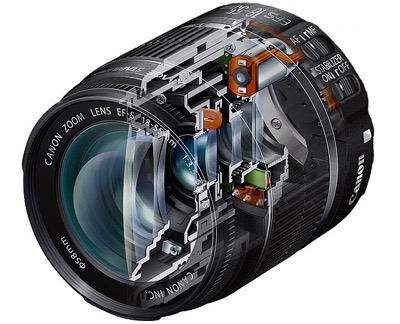
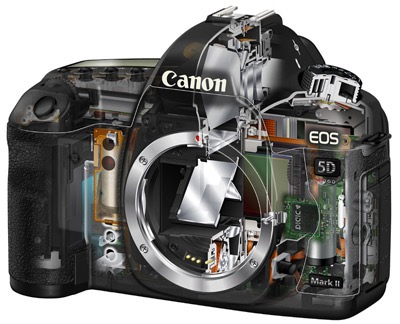
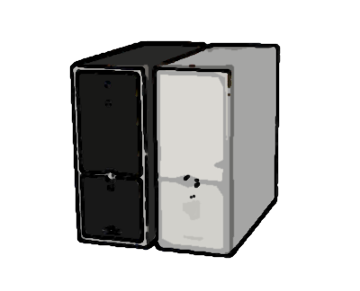
What is Computational Imaging in Electron Microscopy?
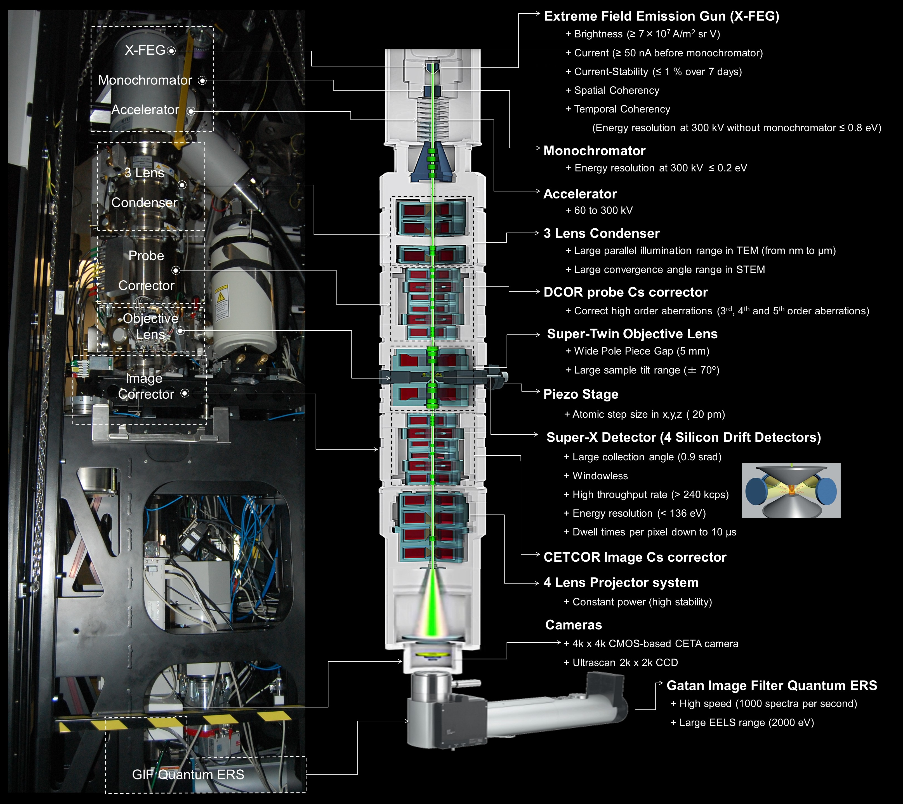
- Optically encode sample information on the detector
- Computationally reconstruct the sample information from the detector data
- Model the image formation as an inverse problem
Roadmap
- What is an inverse problem?
- Formal problem statement
- Why inverse problems are hard
- Signal models & priors
What is an Inverse Problem?
\[ \begin{align*} &\text{Unknown signal:}\quad x \\ &\text{Known forward model:}\quad H \\ &\text{Measured data:}\quad y = H(x) + e \\ &\text{Goal: reconstruct } x \text{ as accurately as possible} \end{align*} \]
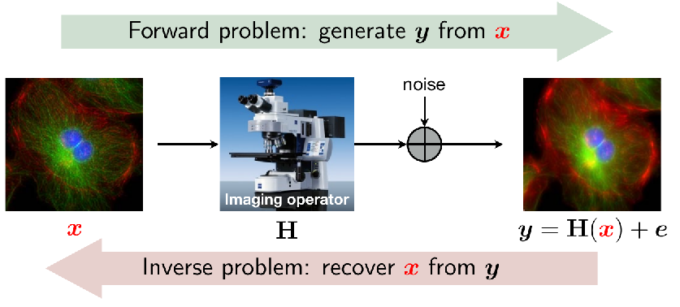
What makes imaging inverse problems challenging?
- solution is not unique
- data is noisy (measurement & model noise)
- problem is intractable
- data is very high-dimensional
The vast majority of imaging problems can be formulated as inverse problems.
Example forward models
| Imaging Problem | Radiation Type | Forward Model / Measurement / Model Equation | Variations / Notes |
|---|---|---|---|
| 2D or 3D tomography | coherent x-ray | \(y_i = R_{\theta_i} x\) | parallel, cone beam |
| 3D deconvolution microscopy | fluorescence | \(y = Hx\) | brightfield, confocal, light sheet |
| Structured illumination microscopy (SIM) | fluorescence | \(y_i = HW_i x\) | full 3D reconstruction; non-sinusoidal patterns |
| Positron emission tomography (PET) | gamma rays | \(y_i = H \theta_i x\) | list mode with time-of-flight |
| Magnetic resonance imaging (MRI) | radio frequency | \(y = SFx\) | uniform or nonuniform sampling in k-space; dynamic MRI: gated or nongated, retrospective registration |
| Optical diffraction tomography (ODT) | coherent light | \(y_{t,i} = S_t F W_i x\) | holography or gating |
| Interferometry | \(y_i = W_i F x\) |
Why Is It Difficult?
1. Non‑uniqueness (Under‑sampling)
Compressive sensing example: \[ y = Ax, \quad A \in \mathbb{R}^{m \times n},\; m < n \]
- Multiple signals consistent with measurement
- If (Az = 0), then (x) and (x’ = x + z) map to same (y)
- Impossible to distinguish without assumptions about (x)
2. Ill‑conditioning (Noise Amplification)
Deconvolution example: \[ y = Ax + e \] (blurred + noisy image)
- Matrix \(A\) invertible but \(A^{-1}\) poorly conditioned
- Small noise \(e\) → huge reconstruction error
- Direct inversion amplifies measurement noise
Deconvolution with a Gaussian kernel as an example of an ill- conditioned inverse problem. The PSNR relative to the original image is above each image. The linear operator (or matrix) A implements a con- volution with a 7 × 7 Gaussian kernel. Top row: Applied to an image, the operator yields a blurry image. The inverse A−1 deconvolves the blurry image, and gives an image that is essentially perfect (56dB instead of ∞dB is due working with floating point numbers). Middle row: The inverse A−1 is poorly conditioned which we can see if we add a small amount of Gaussian noise to the blurry image. Applied to the noisy measurement, the inverse A−1 generates a very noisy image (6.3dB). Bottom row: If the same amount of noise is added to the original image, it has a much smaller, essentially invisible effect.
Example: Deblurring 1
#| code-fold: true
#| code-summary: "Show the code"
#| fig-height: 3
#| fig-width: 8
#| out-width: "70%"
import numpy as np
import matplotlib.pyplot as plt
from PIL import Image
from skimage.metrics import structural_similarity as ssim
# Read image, resize, and make sure coordinates are between 0 and 1
img = Image.open('00004_TE_1808x1352.png')
width,height = img.size
img = img.resize((width//2, height//2))
img_arr = np.array(img)/255#| code-fold: false
#| code-summary: "Define Gaussian blur kernel"
#| label: blur-kernel
#| fig-height: 2
#| fig-width: 4
kernel_size = 7
sigma = 4
kernel = np.zeros((kernel_size, kernel_size))
for i in range(kernel_size):
for j in range(kernel_size):
kernel[i, j] = np.exp(-((i-kernel_size//2)**2 + (j-kernel_size//2)**2) / (2*sigma**2))
kernel /= kernel.sum()
plt.title('Kernel')
plt.imshow(kernel, cmap='gray')
plt.show()Example: Deblurring 2
#| fig-height: 1.5
#| fig-width: 6
def blur_image(image, kernel):
# Apply Fourier transform to each color channel of the image and kernel
image_fft = np.dstack([np.fft.fft2(image[:,:,i]) for i in range(image.shape[2])])
kernel_fft = np.dstack([np.fft.fft2(kernel, s=image[:,:,i].shape) for i in range(image.shape[2])])
# Convolve the Fourier transformed image and kernel for each channel
image_blur_fft = image_fft * kernel_fft
# Apply inverse Fourier transform to the convolved image for each channel
image_blur = np.dstack([np.fft.ifft2(image_blur_fft[:,:,i]).real for i in range(image.shape[2])])
return image_blurExample: Deblurring 3
#| fig-height: 2.5
#| fig-width: 7
#| classes: "tall-cell"
# Define Fourier deconvolution function for one channel
def fourier_deconvolution1channel(img_blur, kernel, eps=1e-3):
# Compute Fourier transforms of image and kernel
img_fft = np.fft.fft2(img_blur, axes=(0,1))
kernel_fft = np.fft.fft2(kernel, s=img_blur.shape[:2], axes=(0,1))
# Deconvolve in Fourier domain
kernel_fft_conj = np.conj(kernel_fft)
img_fft_deconv = (kernel_fft_conj / (np.abs(kernel_fft)**2 + eps)) * img_fft
img_deconv = np.real(np.fft.ifft2(img_fft_deconv, axes=(0,1)))
return img_deconv
# Fourier deconvolution for all channels
def fourier_deconvolution(img_blur, kernel, eps=1e-3):
img_deconv = np.zeros_like(img_blur)
for i in range(3):
img_deconv[:,:,i] = fourier_deconvolution1channel(img_blur[:,:,i], kernel, eps)
return img_deconv
def PSNR(img,hatimg):
mse = np.sum((img-hatimg)**2) / np.prod(img.shape)
if mse == 0:
return 100
PIXEL_MAX = np.max(img)
return 20 * np.log10(PIXEL_MAX / np.sqrt(mse))
# normalize kernel to be in 0,255 range
kernel_normalized = (kernel - np.min(kernel)) / np.max(kernel) * 255
# compute PSNR between two images
def PSNR(img,hatimg):
mse = np.sum((img-hatimg)**2) / np.prod(img.shape)
if mse == 0:
return 100
PIXEL_MAX = np.max(img)
return 20 * np.log10(PIXEL_MAX / np.sqrt(mse))
# compute SSIM between two images
def SSIM(img,hatimg):
return ssim(img,hatimg,multichannel=True)Example: Deblurring 4
#| fig-height: 4
#| fig-width: 10
# blur image
img_blur = blur_image(img_arr, kernel)
# Deblur image with Fourier deconvolution
img_deblur = fourier_deconvolution(img_blur, kernel, eps=1e-10)
# Display original, blurred, and deblurred images side by side
fig, ax = plt.subplots(1, 3, figsize=(15, 5))
ax[0].imshow(img_arr)
ax[0].set_title('Original')
ax[1].imshow(img_blur)
ax[1].set_title('Blurred')
ax[2].imshow(img_deblur)
ax[2].set_title('Deblurred')
plt.show()
# clip img_deblur to be in 0,1 range
img_deblur = np.clip(img_deblur, 0, 1)
print("PSNR blurred: ", PSNR(img_arr,img_blur) )
print("PSNR deblurred: ", PSNR(img_arr,img_deblur ) )
print("SSIM blurred: ", ssim(img_arr, img_blur, channel_axis=2,data_range=1.0) )
print("SSIM deblurred: ", ssim(img_arr, img_deblur, channel_axis=2,data_range=1.0) )
print("max diff:", np.max(img_arr - img_deblur))
print("max diff:", np.max(img_arr - img_blur))Example: Deblurring 5: Blur, add noise, unblur
#| fig-height: 4
#| fig-width: 10
# Blur image
img_blur = blur_image(img_arr, kernel)
# Add noise to img_deblur
img_blur = img_blur + 0.05 * np.random.randn(*img_blur.shape)
# Deblur image with Fourier deconvolution
img_deblur = fourier_deconvolution(img_blur, kernel, eps=1e-3)
# Display original, blurred, and deblurred images side by side
fig, ax = plt.subplots(1, 3, figsize=(15, 5))
ax[0].imshow(img_arr)
ax[0].set_title('Original')
ax[1].imshow(img_blur)
ax[1].set_title('Blurred')
ax[2].imshow(img_deblur)
ax[2].set_title('Deblurred')
plt.show()
print("PSNR blurred: ", PSNR(img_arr,img_blur) )
print("PSNR deblurred: ", PSNR(img_arr,img_deblur ) )Example: Deblurring 6: Add noise, blur, unblur,
#| fig-height: 4
#| fig-width: 10
# add noise
img_noisy = img_arr + 0.05 * np.random.randn(*img_arr.shape)
# blur image
img_blur = blur_image(img_noisy, kernel)
# deblur image
img_deblur = fourier_deconvolution(img_blur, kernel, eps=1e-3)
fig, ax = plt.subplots(1, 3, figsize=(15, 5))
ax[0].imshow(img_noisy)
ax[0].set_title('Original')
ax[1].imshow(img_blur)
ax[1].set_title('Blurred')
ax[2].imshow(img_deblur)
ax[2].set_title('Deblurred')
plt.show()
print("PSNR blurred: ", PSNR(img_arr,img_blur) )
print("PSNR deblurred: ", PSNR(img_arr,img_deblur ) )3. Non‑linearity & Unknown Parameters
- Forward model \(f\) may be non‑linear
- System parameters may be unknown/uncertain
Regularized Inversion
Regularized inversion provides a unified approach for integrating physics and prior knowledge:
- Image recovery is often an ill-posed inverse problem
- Formulation as a regularized optimization problem
Example: Linear Inverse Problems (20th Century Theory)
Forward model with noise: \[y = H(x) + e\]
Regularized solution: \[\hat{x} = \arg\min_x \{f(x)\}\]
where \[f(x) := g(x) + h(x)\]
Explicit solution: \[\hat{x} = \arg\min_x \left\{\frac{1}{2}\|y-Hx\|_2^2 + \frac{\lambda}{2} \|Dx\|_2^2\right\} =\]
\[ (H^HH + \lambda D^HD)^{-1}H^Hy = R_\lambda y\]
Interpretation:
- “Filtered” backprojection
- Assumption: Gaussians everywhere
Optimization Algorithms
FISTA and ADMM are two popular algorithms for large-scale and nonsmooth optimization:
Fast Iterative Shrinkage/Thresholding Algorithm (FISTA)
- Gradient descent on data term
- Proximal operator on prior term
- Momentum acceleration
\[\begin{aligned} z_k &= s_{k-1} - \nabla g(s_{k-1}) \\ x_k &= \text{prox}_h(z_k) \\ s_k &= x_k + \left(\frac{q_{k-1}-1}{q_k}\right)(x_k-x_{k-1}) \end{aligned} \]
Alternating Direction Method of Multipliers (ADMM)
- Proximal operators on both terms
- Augmented Lagrangian approach
- Splitting variables
\[\begin{aligned} z_k &= \text{prox}_g(x_{k-1} - s_{k-1}) \\ x_k &= \text{prox}_h(z_k + s_{k-1}) \\ s_k &= s_{k-1} + (z_k - x_k) \end{aligned} \]
For minimizing: \(f(x) = g(x) + h(x)\)
Interpretation
Both FISTA and ADMM alternate between increasing data consistency and reducing noise:
Gradient descent \(\nabla g\):
- Less data consistent → more data consistent
Proximal operators \(\text{prox}_g\), \(\text{prox}_h\):
- Less data consistent → more data consistent
- More noisy image → less noisy image
Is there a better way to represent images than using fixed sparsity-promoting transforms?
Question: The interest in sparsity-driven imaging highlighted the importance of structural priors for image formation
Question: Do we know a more flexible, sophisticated, and data-adaptive tool for characterizing imaging priors?
Answer: Yes, deep neural nets provide a state-of-the-art tool for representing and enforcing sophisticated structural information
Warning
How to use deep neural nets as priors for imaging?
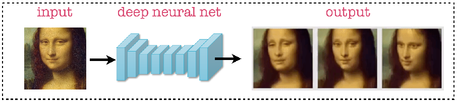
Basic idea: Train a mapping from the measured data to the desired image
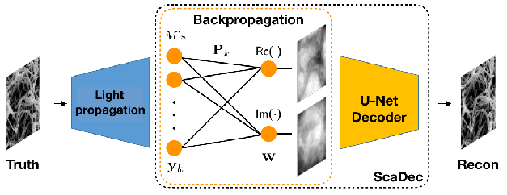
- Question: What are some of the limitations of this approach?
- The neural net learns both the forward model and the prior
- May learn incorrect/simplified physics, no guarantee of physical consistency
- Consistency to measured data not ensured
- Network output may deviate from measurements
- Finding efficient end-to-end mapping is challenging
- Fully connected layers don’t scale well
Key limitation
Direct inversion networks trade physical consistency for computational efficiency
Plug-and-Play (PnP) Priors - Separating Forward Models from Learned Priors
Plug-and-Play (PnP) Priors
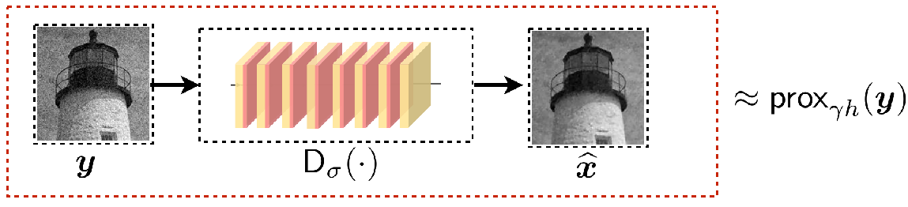
Key idea: Separate the forward model from the learned prior
- Forward model: Physics-based data consistency term
- Ensures output matches measurements
- Preserves physical constraints
- Learned prior: Pre-trained denoising network
- Captures complex image statistics
- No knowledge of forward model needed
Algorithms:
\[ \begin{aligned} z^k &\leftarrow \color{green}{\boxed{\text{prox}_{\alpha g}(x^{k-1} - s^{k-1})}} \\ x^k &\leftarrow \color{red}{\boxed{D_\sigma(z^k + s^{k-1})}} \\ s^k &\leftarrow s^{k-1} + (z^k - x^k) \end{aligned} \]
PnP-ADMM\[ \begin{aligned} z^k &\leftarrow \color{green}{\boxed{s^{k-1} - \gamma\nabla g(s^{k-1})}} \\ x^k &\leftarrow \color{red}{\boxed{D_\sigma(z^k)}} \\ s^k &\leftarrow x^k + ((q_{k-1} - 1)/q_k)(x^k - x^{k-1}) \end{aligned} \]
PnP-FISTA- forward model (green box): data consistency term that ensures physical constraints
- denoiser as prior (red box): learned prior that captures complex image statistics
Advantage
Combines physical accuracy with powerful learned priors
Key insight: Prior knowledge converts ill‑posed \(\rightarrow\) well‑posed problems
Tomography Motivation 1: Structure Directly Affects Functionality
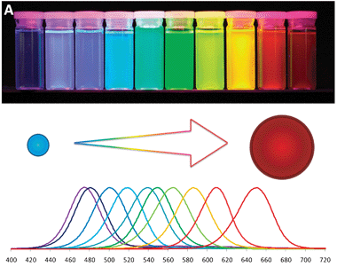
P Zrazhevskiy et al, Chem So Rev (2010)
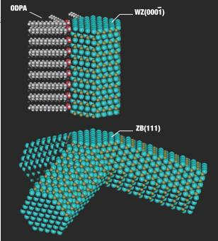
L Manna et al, Nature (2003)
- Quantum dot size affects their optical emission color
- Tetrapod shape affects their optical absorption
- Need to measure morphology to determine shape mediated functionality
Tomography Motivation 2: Projections Are Misleading
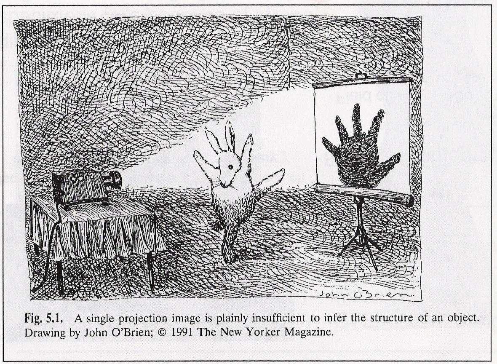Microscopists study the shadows on the wall because they do not have access to the objects that create them.
Tomography Motivation 3: Hetero-/Homo-geneous Structures
- Many biological structures can be copied and purified
- Averaging improves SNR, reduces damage
- 3D tertiary form gives molecular functionality and interactions
- Physical science nanomaterials are different on the atomic scale
- Averaging “Monodisperse” NPs
- Must resolve local atomic structure directly to measure:
- Defects, compositional anti-phase boundaries, amorphous structure, dopant atoms
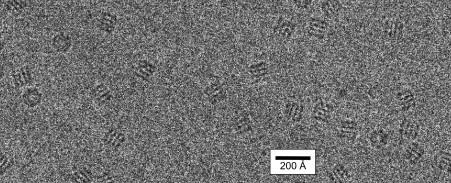single-particle imaging [1]
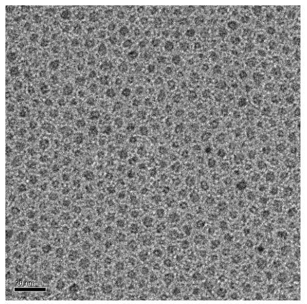 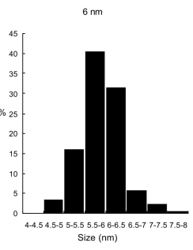nanoparticle size distribution [2]
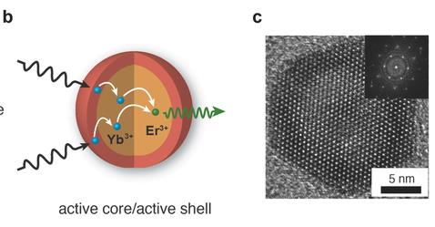defects [3]
Tomography Motivation 4: Projection Problem for TEMs
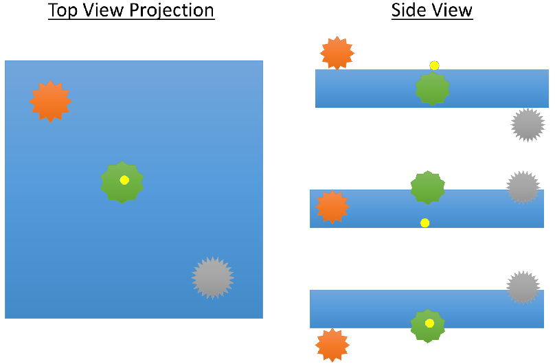
Techniques for 3D structural analysis
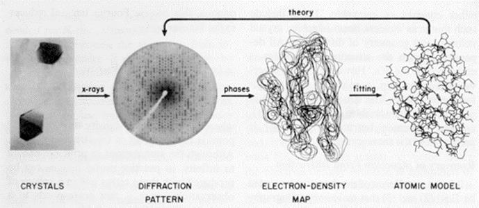

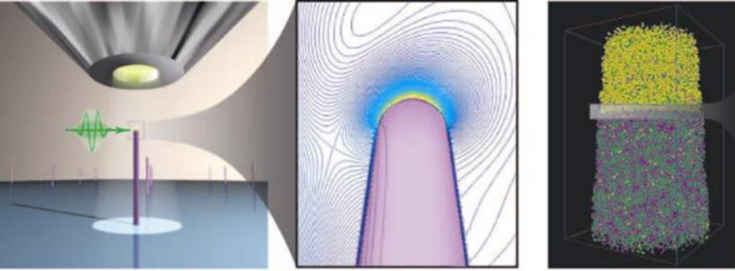
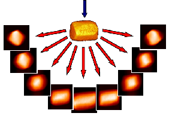
All of these are inverse problems
Each of these techniques requires solving an inverse problem to reconstruct the 3D structure from indirect measurements:
- X-ray/Electron crystallography: Reconstruct atomic positions from diffraction patterns
- Cryo-EM: Reconstruct 3D protein structure from 2D projections
- Atom Probe Tomography: Reconstruct 3D atomic positions from time-of-flight and position data
- Electron tomography: Reconstruct 3D density from 2D projections at different angles
Projection Requirement
- Projected intensity must be a monotonic function of some property of the the object
- Mass, thickness, electric-potential, etc.
- Beer’s law for scattering is exponential with thickness: \[I = I_0 \exp(-t/\lambda)\]
- TEMs are in fact structure projectors under certain conditions
- TEM objective aperture enhances amplitude contrast
- ADF-STEM produces incoherent Z contrast
Linear Projection Operation
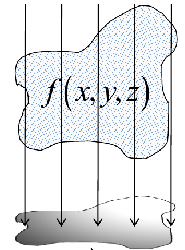
An object’s density can be discretized as a function f(x,y,z)
Projection is similar to summation along a given direction:
\[\int f(x,y,z)dz = \sum_z f(x,y,z) = f(x,y)\]
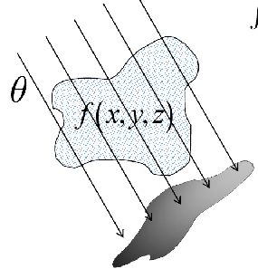
\[\int f(x,y,z)d\theta = \sum_\theta f(x,y,z) = f_\theta(x,y)\]
3 Linear Projections
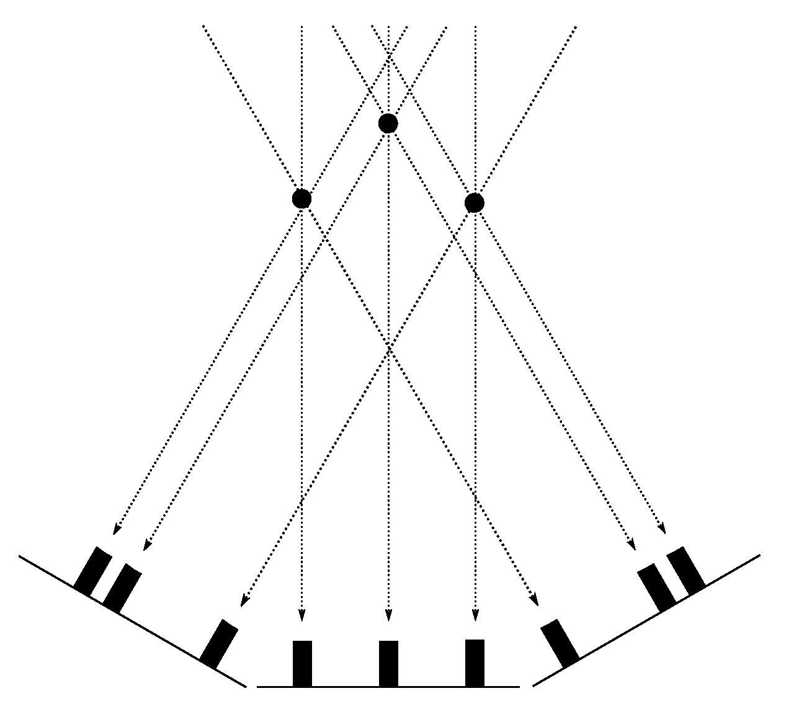- A simple sum of the mass at each tilt-angle projected onto a line
- Each tilt tells us a little more about the shape and distribution
Tomographic Backprojection
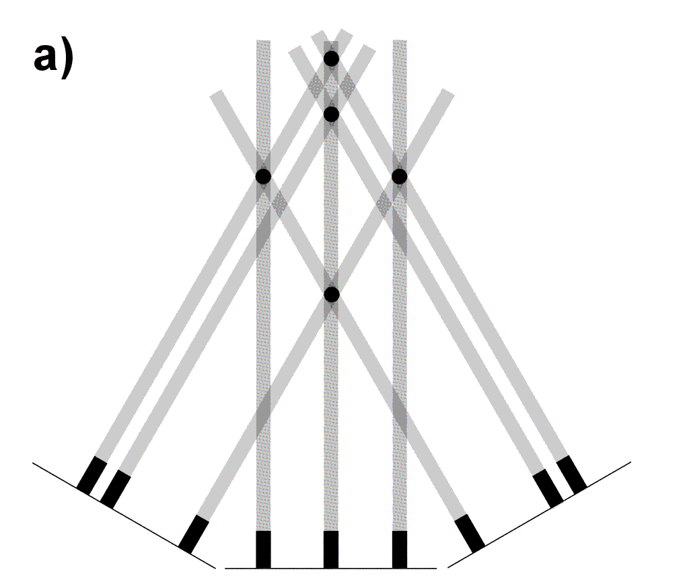
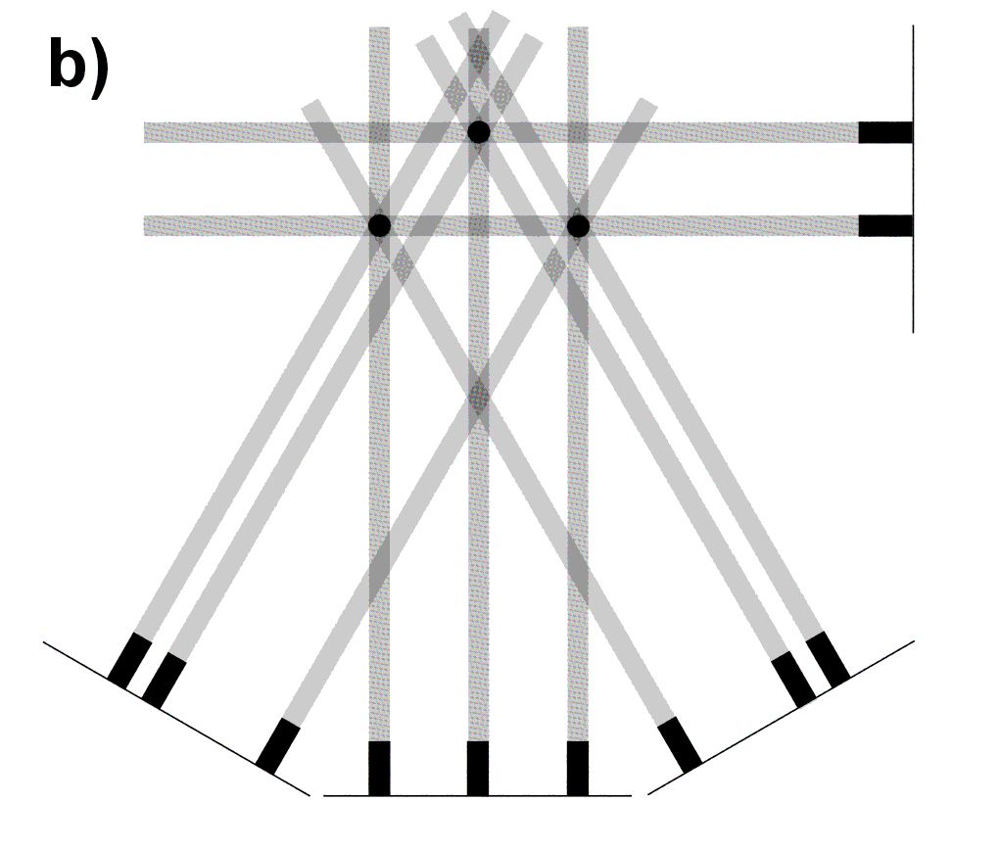
- Real space transform
- Only 3 projections produce a clear artifact
- Many projections allow reconstruction of complicated objects
Meaning of a Sinogram
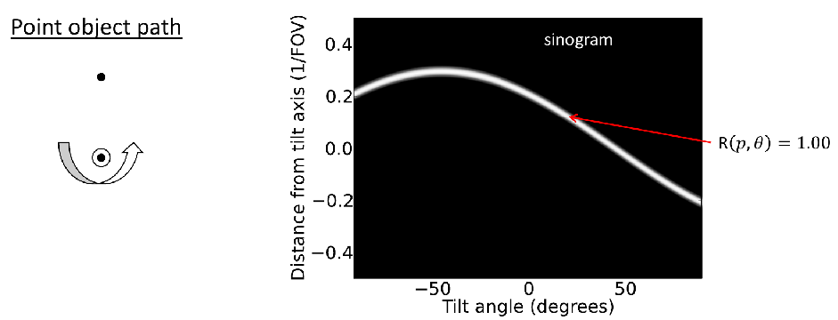- A Sinogram shows the projected density a distance from the tilt axis at each tilt angle
- Equivalent to Yq in previous image stack video
- Reconstruct algorithms interpolate on the sonogram to fill a volume
Limited Tomography Reconstruction
Full reconstruction
30 degree missing wedge
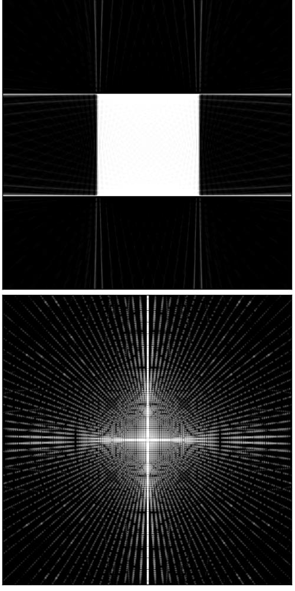
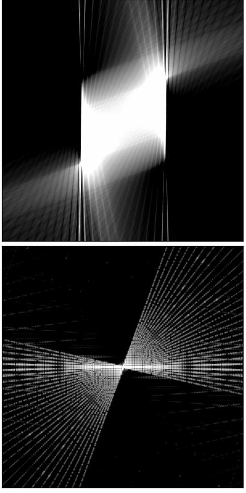
Radon backprojection ±70°, 50 projections
FFT of Reconstruction
Fourier Slice Theorem
- Object has mass-density f ( x, z )
- Acquire many projections to sample the object’s information
- Possibility to invert Fourier space to retrieve full 3D information of the object
- Fourier Slice Theorem:
\(F_{2D}[f(x,z)] = \int \int f(x,z)e^{i2\pi(k_x x + k_z z)}dxdz\)
\(F_{2D}[f(x,y)] = F_x[F_y[f(x,y)]] = \underline{F}(k_x,k_y)\)
\(F_{3D}[f(x,y,z)] = F_x[F_y[F_z[f(x,y,z)]]] = \underline{F}(k_x,k_y,k_z)\)
Note
The Fourier Slice Theorem states: A projection of an object is equivalent to a central slice of the object’s Fourier transform at the viewing angle
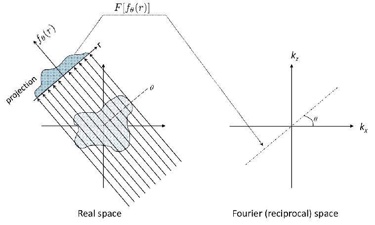
The Radon Transform
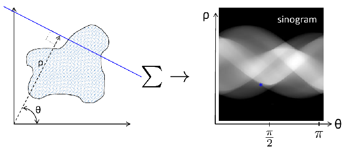- Radon transform is a sum along a line at angle θ
- No Fourier transform is used
- Avoids reciprocal space amplitude / phase
- Simpler interpolation
Example Inverse Problem: Tomography - metrics and operators
#| fig-height: 4
#| fig-width: 10
#| code-fold: false
#| code-summary: "Show the code"
import numpy as np
import torch as th
import skimage.data as skdata
import skimage.transform as sktrans
import matplotlib.pyplot as plt
from scipy.ndimage import gaussian_filter
# Define PSNR function
def PSNR(img1, img2):
"""
Calculate Peak Signal-to-Noise Ratio between two images
Args:
img1, img2: numpy arrays of same shape
Returns:
PSNR value in dB
"""
mse = np.mean((img1 - img2) ** 2)
if mse == 0:
return float('inf')
max_pixel = 1.0 # assuming normalized images [0,1]
return 20 * np.log10(max_pixel / np.sqrt(mse))
# Define SSIM function
def SSIM(img1, img2):
"""
Calculate Structural Similarity Index between two images
Args:
img1, img2: numpy arrays of same shape
Returns:
SSIM value between -1 and 1 (1 = identical images)
"""
from skimage.metrics import structural_similarity as ssim
return ssim(img1, img2, data_range=1.0)
# Define tomography forward operator
def radon_forward(img, angles):
"""
Compute Radon transform of an image using PyTorch
Args:
img (torch.Tensor): Input image [B,C,H,W]
angles (torch.Tensor): Projection angles in radians
Returns:
torch.Tensor: Radon transform (sinogram) [B,C,len(angles),W]
"""
device = img.device
batch_size, channels, height, width = img.shape
num_angles = len(angles)
# Create coordinate grid
x = th.linspace(-1, 1, width).to(device)
y = th.linspace(-1, 1, height).to(device)
X, Y = th.meshgrid(x, y, indexing='ij')
# Initialize output sinogram
sinogram = th.zeros(batch_size, channels, num_angles, width).to(device)
for i, theta in enumerate(angles):
# Rotation matrix
cost, sint = th.cos(theta), th.sin(theta)
# Rotate coordinates
Xrot = X * cost - Y * sint
Yrot = X * sint + Y * cost
# Project along y-axis by summing
# Create affine transformation matrix
affine_matrix = th.tensor([[cost, -sint, 0],
[sint, cost, 0]], device=device).unsqueeze(0)
grid = th.nn.functional.affine_grid(affine_matrix, img.size(), align_corners=False)
rotated = th.nn.functional.grid_sample(img, grid, align_corners=False)
proj = th.sum(rotated.squeeze(), dim=0)
sinogram[..., i, :] = proj
return sinogram
img = skdata.astronaut()
img = sktrans.resize(img, (128, 128))
img = gaussian_filter(img, sigma=1)
# Convert to grayscale by taking mean across color channels
img = np.mean(img, axis=2)
img = img.astype(np.float32) / 255.0
img = th.from_numpy(img).unsqueeze(0).unsqueeze(0) # Add channel dim for grayscale
# Create circular mask
h, w = img.shape[-2:]
center = (h//2, w//2)
Y, X = np.ogrid[:h, :w]
dist_from_center = np.sqrt((X - center[1])**2 + (Y - center[0])**2)
mask = dist_from_center <= h//2
mask = th.from_numpy(mask).float()
mask = mask.unsqueeze(0).unsqueeze(0) # Match img dimensions
# Apply mask
img = img * maskExample Inverse Problem: Tomography
#| fig-height: 4
#| fig-width: 10
#| code-fold: true
#| code-summary: "Show the code"
# Generate projection angles
angles = th.linspace(0, th.pi, 180)
# Compute forward projection
sinogram = radon_forward(img, angles)
# Create figure
# Create figure with GridSpec to control subplot widths
fig = plt.figure(figsize=(18, 6))
gs = plt.GridSpec(1, 2, width_ratios=[1, 3]) # 1:2 ratio = 1/3 : 2/3
ax0 = fig.add_subplot(gs[0])
ax1 = fig.add_subplot(gs[1])
ax0.imshow(img.squeeze().cpu().numpy(), cmap='gray')
ax0.axis('off')
ax0.set_title('Original Image - Ground Truth')
ax1.set_xlabel('Projection Angle (radians)')
ax1.set_ylabel('Detector Position')
ax1.axis('on') # Turn axis back on since it was turned off
# Set x-ticks to show angles from 0 to π
x_ticks = np.linspace(0, sinogram.shape[-2], 5)
x_tick_labels = np.linspace(0, np.pi, 5)
ax1.set_xticks(x_ticks)
ax1.set_xticklabels([f'{x:.1f}π' for x in x_tick_labels/np.pi])
# Set y-ticks to show detector positions from -1 to 1
y_ticks = np.linspace(0, sinogram.shape[-1], 5)
y_tick_labels = np.linspace(-1, 1, 5)
ax1.set_yticks(y_ticks)
ax1.set_yticklabels([f'{y:.1f}' for y in y_tick_labels])
ax1.imshow(sinogram.squeeze().cpu().numpy().T, cmap='gray')
ax1.set_title('Sinogram (Radon Transform)')
plt.tight_layout()
plt.show()
Example Inverse Problem: Tomography Optimization Loop
#| fig-height: 4
#| fig-width: 10
# Initialize reconstruction with zeros
recon = th.zeros_like(img)
recon.requires_grad_(True)
# Set up optimizer
optimizer = th.optim.Adam([recon], lr=1e-3)
# Number of iterations
n_iters = 40
# L1 regularization strength
lambda_l1 = 1e-4
# Training loop
for i in range(n_iters):
# Forward pass
pred_sinogram = radon_forward(recon, angles)
# Compute data fidelity loss
data_loss = th.nn.functional.mse_loss(pred_sinogram, sinogram)
# Compute L1 regularization loss
l1_loss = lambda_l1 * th.norm(recon, p=1)
# Total loss
loss = data_loss + l1_loss
# Backward pass
optimizer.zero_grad()
loss.backward()
optimizer.step()
if (i+1) % 10 == 0:
print(f'Iteration {i+1}, Data Loss: {data_loss.item():.6f}, L1 Loss: {l1_loss.item():.6f}, Total Loss: {loss.item():.6f}')
Example Inverse Problem: Results and Metrics
recon = recon
# Display results
fig, (ax1, ax2, ax3) = plt.subplots(1, 3, figsize=(15, 5))
ax1.imshow(img.squeeze().cpu().numpy(), cmap='gray')
ax1.set_title('Original')
ax1.axis('off')
ax2.imshow(sinogram.squeeze().cpu().numpy(), cmap='gray')
ax2.set_title('Sinogram')
ax2.axis('off')
ax3.imshow(recon.detach().squeeze().cpu().numpy(), cmap='gray', vmin=0, vmax=img.max())
ax3.set_title('Reconstructed')
ax3.axis('off')
plt.tight_layout()
plt.show()
# Print reconstruction quality metrics
original = img.squeeze().cpu().numpy()
reconstructed = recon.detach().squeeze().cpu().numpy()
print(f"PSNR: {PSNR(original, reconstructed):.2f}")
print(f"SSIM: {SSIM(original, reconstructed):.4f}")References
Heckel, R. (2024). Deep Learning for Computational Imaging, Chapter 1.
©Philipp Pelz - FAU Erlangen-Nürnberg - Data Science for Electron Microscopy